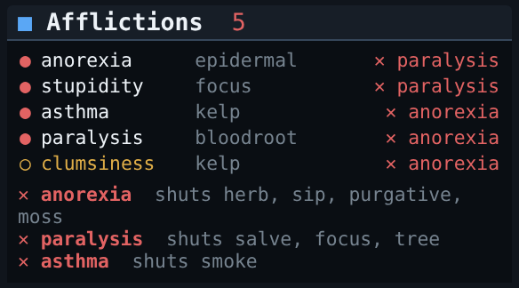

Documentation / Features
Client-side curing
Emunah tracks every affliction you have and cures each one on the balance that can cure it, the moment that balance is back. Achaea's server-side curing stays off, and every rule Emunah follows is one you can read and change.

One cure per balance
Achaea gates each kind of cure behind its own balance. Eating a herb, applying a salve and sipping an elixir can all happen in the same second; two herbs cannot. So there is no single priority list in Emunah. Each balance picks its own most urgent cure, every prompt, and sends it as soon as it is chosen.
| Balance | Cures with |
|---|---|
| Herb | Eating plants, or their minerals in minerals mode. |
| Salve | Applying salves, to the body part each one needs. |
| Sip | Health and mana elixirs, and tonics. |
| Purgative | The affliction-curing elixirs: immunity, frost, venom, speed and levitation. |
| Smoke | A lit pipe. Pipes keeps them filled and lit. |
| Focus | FOCUS, for mental afflictions, held back when mana is low. |
| Moss | Irid moss and potash. |
| Tree | Touching the tree tattoo, when you have one. |
Some cures spend no curing balance at all and go out alongside the others: COMPOSE for fear, CONCENTRATE, CLOT for bleeding above a threshold, and WRITHE for entanglement. WRITHE is sent once per entanglement and never repeated while it is under way, because a second one makes it take longer.
The ranking within each balance follows the reference system's. emset prio <affliction> <balance> <rank> moves any affliction up or down on any one balance; lower is sooner.
A fixed ranking is wrong in particular fights, so a few situational rules move a cure while a situation lasts. Under inquisition, guilt and spiritburn are eaten first, because clearing them is what ends it, and burning is neither salved nor left to the tree. Paralysis goes ahead of asthma when it is holding your sip at low health. Weariness that comes back within seconds of every cure drops to last on the herb balance. Justice is left alone while you are not attacking, because it only reflects your own attacks. Each rule is backed by evidence, listed in the source.
To use your own ranks and rule changes, put them in conf/priorities.conf and conf/situations.conf in the checkout and turn them on with emset ownprios on. emset ownprios off goes back to the shipped ones without touching the files. The other files in conf/ can pin any setting, such as the healing thresholds in healing.conf.
Locks
Some afflictions shut whole balances. Sending into a shut balance wastes a round trip, so Emunah checks every block before it chooses a cure, and cures through the balance that is still open.
| Affliction | Shuts | Cured through |
|---|---|---|
| Anorexia | Herb, sip, purgative and moss | An epidermal salve, or FOCUS |
| Slickness | Salve | Smoking valerian, or eating bloodroot |
| Asthma | Smoke | Eating kelp |
| Paralysis | Everything except eating | Eating bloodroot |
| Impatience | Focus | Eating goldenseal |
A block can land after a cure has been queued, so the queue asks again at the moment it would send. Stun, sleep and unconsciousness hold everything; prone holds only what needs you upright, so you keep eating and sipping on the ground.
Healing
Four sources, three balances, and each engages at its own threshold. Healing outranks curing on the balances it uses: there is nothing to gain from curing stupidity at 8% health.
| Source | Balance | Default |
|---|---|---|
| Drink mana | Sip | below 85% |
| Drink health | Sip, ahead of mana | below 80% |
| Eat irid moss | Moss | below 68%, health or mana |
| Perform Hands | Equilibrium | below 50% |
Perform Hands is set low on purpose: it costs the equilibrium your attacks need. When a vial runs dry, Emunah stops asking for that fluid for a while and tells you what needs refilling, rather than tying up the sip balance with a drink that cannot happen.
Knowing what you have
Afflictions come from GMCP, and GMCP reports them reliably, in player combat as well as against denizens, with two exceptions:
- Loki hides what you have. Emunah sends DIAG when the list is in doubt, which reports the truth for a second of equilibrium.
- Blackout stops updates altogether. Emunah stops trusting a frozen list and catches up the moment it lifts.
Recklessness is a third case of a different kind: it reports your health and mana as full whatever they are. While it is up, Emunah heals on every source rather than trust a figure that reads 100% while you die, and cures the recklessness itself early.
With EmunahTriggers.xml installed, the game's own text adds to GMCP. A trigger sees an affliction the instant its line prints, ahead of the next GMCP update, and a cure line frees its balance at once instead of waiting out a timer.
Illusions
Text can be faked; GMCP cannot. So everything that comes from text is checked the way the reference system checks it:
- Text reports wait for the prompt that ends their block.
- One illusion in a block discards the whole block.
- A cure line only counts while that cure is actually in flight.
- An affliction reported by text is dropped unless the server confirms it within about two seconds.
Emunah's own lines get the same treatment with or without the trigger package: a refusal only counts after a command it could be answering, and a herb balance that comes back implausibly fast is ignored. Anything ignored is marked (i) on its line, so you can see it was caught.
Defences held on purpose
Some defences look like afflictions to the game. If you are deliberately blind or deaf, GMCP reports blindness or deafness, and a naive engine would cure it and then do it again every time keep-up restored the defence. Emunah knows which afflictions are defences you are holding, and leaves them alone for exactly as long as the defence is up.
Cures in hand
Cures live in the rift, and pulling one out takes a round trip. A herb pulled at the moment you need it arrives too late. Emunah keeps one of each curative in your inventory, pulling the next as soon as one is used, and puts any surplus back: inventory is lost on death and the rift is not.
Pulls go one at a time, never while you are entangled, and still while you are paralysed, because the bloodroot that cures paralysis may be in the rift.
Sleep
Emunah wakes you from a sleep you did not choose. For one you do choose, type sleep: it relaxes insomnia, sends SLEEP, and holds both the wake and insomnia until you are up.
Commands
emset curing # on or off, and everything being tracked
emset curing on|off
emset prio paralysis herb 1 # cure paralysis first on the herb balance
emset curing.method minerals # cure with minerals instead of herbs
pp # pause or resume curing and defences togetherEvery curing setting is listed in the command reference.